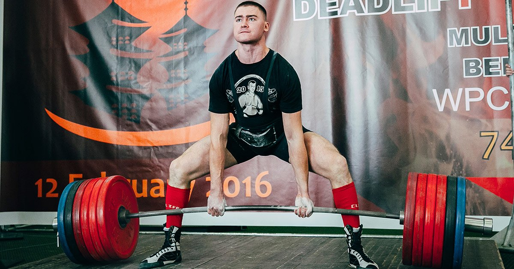

På den här sidan hittar du grundläggande information om styrkelyft. Styrkelyft är en idrott som innefattar tre delmoment: knäböj, bänkpress och marklyft. Dessa genomförs oavsett om deltagaren tävlar i klassisk styrkelyft eller i utrustad styrkelyft. I utrustad styrkelyft har deltagaren speciella dräkter beroende på vilket delmoment som genomförs. Dräkten gör det möjligt för deltagaren att lyfta tyngre vikter än i klassisk styrkelyft, men ställer fortfarande höga krav på deltagaren. Vid tävling genomförs deltagarna i nämnd ordning. Deltagaren (lyftaren) har tre försök i varje delgren där den högsta godkända vikten i respektive delgren sparas till ett sammanlagt resultat.
1. I Marklyft ligger en skivstång med vikter på golvet. Det finns två huvudstilar i detta moment, sumo (bred fotställning, visas i bilden) och smal/konventionell (smal fotställning). Stången lyfts framför kroppen med båda händerna greppade om stången utan sänkning tills lyftaren är helt uppsträckt med raka ben och rak rygg. Det är ej tillåtet att underlätta lyftet genom att skjuta under låren/knäna. På domarens signal sänker man sedan stången till golvet igen.